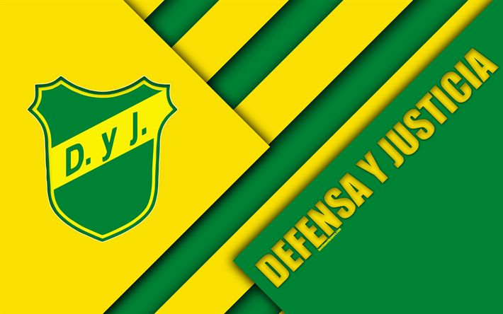

ostenta la particularidad de ser uno de los dos únicos clubes argentinos (el otro es Talleres de Córdoba) que han logrado consagrarse campeones a nivel internacional, sin haber obtenido nunca una competición local. El club finalizó como subcampeón de Primera División en las temporadas 2018-19 y 2021.
Además, de esta empresa el club tomaría el apodo por el que sería popularmente conocido en el futuro: “los halcones”.
